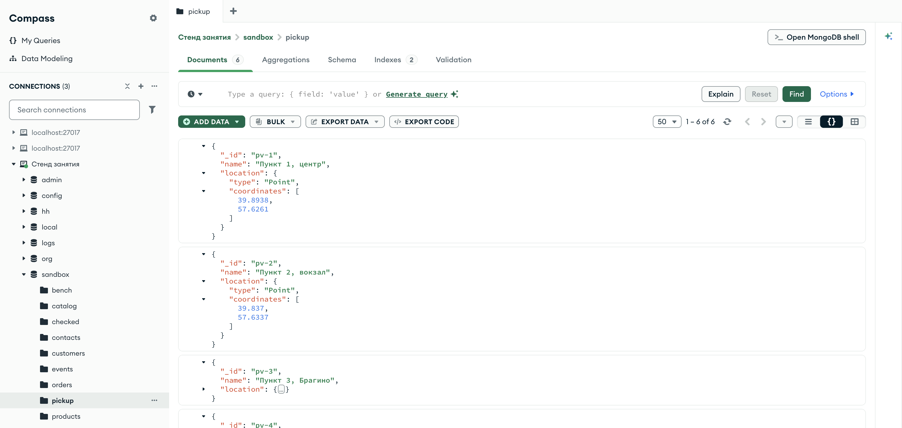
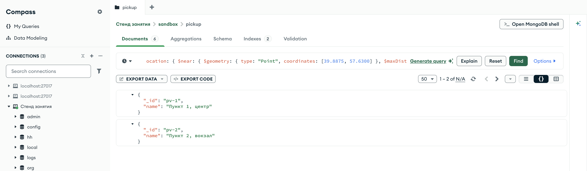
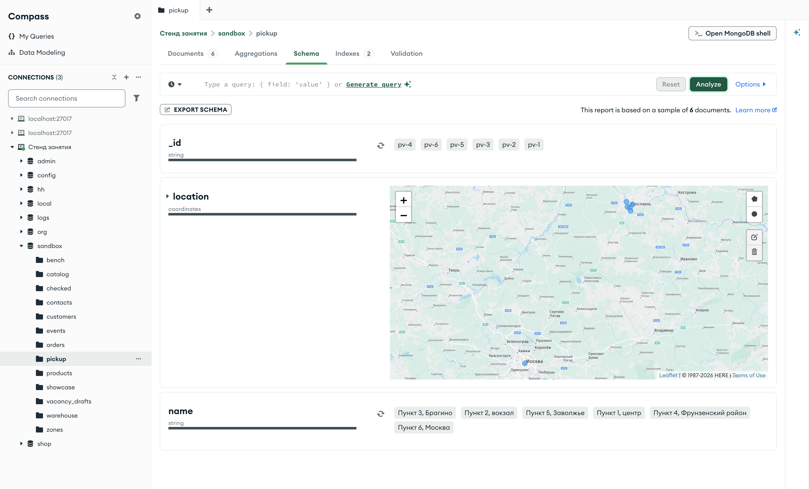
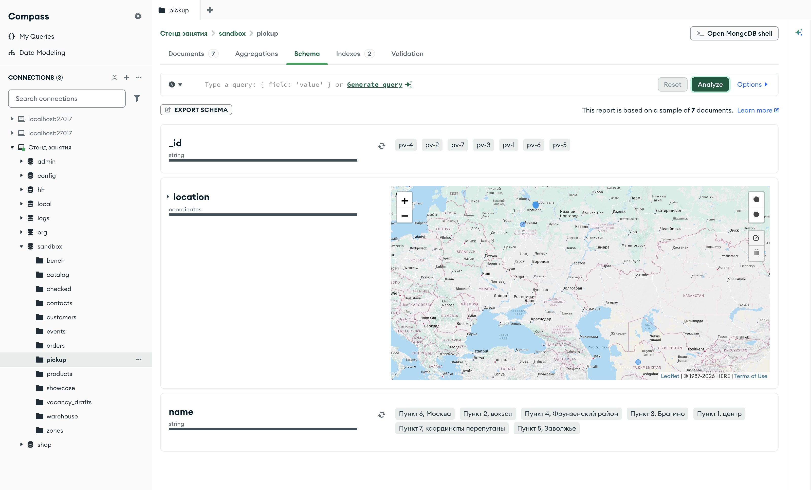

Справочник по MongoDB · модуль 3 · форма данных и скорость
3.5
География:
$near и $geoWithin
В этой главе разобраны запросы по координатам: ближайшие к покупателю пункты выдачи, пункты внутри круга или многоугольника и зона доставки, в которую попадает адрес. Точки и области записываются в формате GeoJSON, запросы к ним обслуживает индекс 2dsphere. Отдельно разобран порядок координат — долгота, затем широта — и что происходит, если его перепутать.
- Категория
- Форма данных
- Уровень
- Начальный
- Связанные темы
- Индексы (глава 3.2), вложенные документы и массивы (глава 2.1)
- Зачем это знать
- Находить ближайшие объекты и проверять, попадает ли точка в область, запросом к базе
Как запускать примеры этой главы
docker compose run --rm reset или скрипт из главы 1.0, §6.mongodb-glava-3.5-python.zip, 61 КБmongodb-glava-3.5-ruby.zip, 61 КБmongodb-glava-3.5-go.zip, 65 КБmongodb-glava-3.5-cpp.zip, 64 КБ — все примеры главы готовыми программами, базы и стенд в Docker. В README.md — запуск в Docker, если Compass нет или он не подключается, и на установленном сервере с Compass, а также что должна напечатать каждая программа.lessons/ch3_5.py — пример вставляется в конец файлаlessons/ch3_5.rb — пример вставляется в конец файлаlessons/ch3_5.go — пример внутрь скобок в конце main, функции и типы — выше mainlessons/ch3_5.cpp — пример внутрь скобок в конце main, функции — выше maincd lessons, затем python ch3_5.pycd lessons, затем python3 ch3_5.py · в Docker: docker compose run --rm python lessons/ch3_5.pycd lessons, затем ruby ch3_5.rb · в Docker: docker compose run --rm ruby lessons/ch3_5.rbcd lessons, затем go run ch3_5.go · в Docker: docker compose run --rm go lessons/ch3_5.gocd lessons, затем g++ -std=c++17 ch3_5.cpp -o prog $(pkg-config --cflags --libs libmongocxx1) && ./prog · в Docker: docker compose run --rm cpp lessons/ch3_5.cpp§1Точка на карте: GeoJSON и индекс 2dsphere
Магазин открывает пункты выдачи и хочет показывать покупателю ближайшие. Положение пункта задаётся двумя числами: долготой — углом к востоку от нулевого меридиана, и широтой — углом к северу от экватора. Центр Ярославля — примерно 39,89° восточной долготы и 57,63° северной широты.
MongoDB хранит такие места в формате GeoJSON — стандартной записи географических объектов в JSON. Точка — вложенный документ из двух полей: type со значением "Point" и coordinates — массив из двух чисел, сначала долгота, затем широта. Порядок обратный привычному «широта, долгота» из картографических сервисов; что бывает при путанице, разобрано в §5.
Координат в базах стенда нет, поэтому пример сам создаёт в песочнице коллекцию pickup (sandbox.pickup) — шесть условных пунктов выдачи: пять в разных районах Ярославля и один в Москве. Названия пунктов придуманы, координаты взяты по центрам районов. Точка покупателя here — в центре Ярославля, она объявлена в заготовке главы.
Запросы по расстоянию обслуживает индекс 2dsphere: он считает Землю сферой и хранит точки так, чтобы сервер быстро находил ближайшие. У поля в ключе такого индекса вместо направления стоит "2dsphere". Пример сначала пробует найти ближайшие пункты без индекса, затем создаёт его.
from pymongo.errors import OperationFailure points = [ ("pv-1", "Пункт 1, центр", 39.8938, 57.6261), ("pv-2", "Пункт 2, вокзал", 39.8370, 57.6337), ("pv-3", "Пункт 3, Брагино", 39.8178, 57.6929), ("pv-4", "Пункт 4, Фрунзенский район", 39.9050, 57.5848), ("pv-5", "Пункт 5, Заволжье", 39.9500, 57.6650), ("pv-6", "Пункт 6, Москва", 37.6056, 55.7650), ] pickup.drop() pickup.insert_many({"_id": pid, "name": name, "location": {"type": "Point", "coordinates": [lng, lat]}} for pid, name, lng, lat in points) print("пунктов выдачи:", pickup.count_documents({})) try: list(pickup.find({"location": {"$near": {"$geometry": here}}})) except OperationFailure as e: print("$near без индекса: ошибка", e.code) print("создан индекс:", pickup.create_index([("location", "2dsphere")]))
struct point { std::string id, name; double lng, lat; }; std::vector<point> points{ {"pv-1", "Пункт 1, центр", 39.8938, 57.6261}, {"pv-2", "Пункт 2, вокзал", 39.8370, 57.6337}, {"pv-3", "Пункт 3, Брагино", 39.8178, 57.6929}, {"pv-4", "Пункт 4, Фрунзенский район", 39.9050, 57.5848}, {"pv-5", "Пункт 5, Заволжье", 39.9500, 57.6650}, {"pv-6", "Пункт 6, Москва", 37.6056, 55.7650}}; pickup.drop(); std::vector<bsoncxx::document::value> docs; for (const auto& p : points) { docs.push_back(make_document( kvp("_id", p.id), kvp("name", p.name), kvp("location", make_document(kvp("type", "Point"), kvp("coordinates", make_array(p.lng, p.lat)))))); } pickup.insert_many(docs); std::cout << "пунктов выдачи: " << pickup.count_documents(make_document()) << std::endl; try { for (auto&& doc : pickup.find(make_document(kvp("location", make_document(kvp("$near", make_document(kvp("$geometry", here.view())))))))) { (void)doc; } } catch (const mongocxx::operation_exception& e) { std::cout << "$near без индекса: ошибка " << e.code().value() << std::endl; } auto created = pickup.create_index(make_document(kvp("location", "2dsphere"))); std::cout << "создан индекс: " << created.view()["name"].get_string().value << std::endl;
points := []struct { id, name string lng, lat float64 }{ {"pv-1", "Пункт 1, центр", 39.8938, 57.6261}, {"pv-2", "Пункт 2, вокзал", 39.8370, 57.6337}, {"pv-3", "Пункт 3, Брагино", 39.8178, 57.6929}, {"pv-4", "Пункт 4, Фрунзенский район", 39.9050, 57.5848}, {"pv-5", "Пункт 5, Заволжье", 39.9500, 57.6650}, {"pv-6", "Пункт 6, Москва", 37.6056, 55.7650}, } pickup.Drop(ctx) docs := []any{} for _, p := range points { docs = append(docs, bson.D{ {Key: "_id", Value: p.id}, {Key: "name", Value: p.name}, {Key: "location", Value: bson.D{{Key: "type", Value: "Point"}, {Key: "coordinates", Value: bson.A{p.lng, p.lat}}}}}) } pickup.InsertMany(ctx, docs) n, _ := pickup.CountDocuments(ctx, bson.D{}) fmt.Println("пунктов выдачи:", n) _, err := pickup.Find(ctx, bson.D{{Key: "location", Value: bson.D{{Key: "$near", Value: bson.D{{Key: "$geometry", Value: here}}}}}}) var ce mongo.CommandError if errors.As(err, &ce) { fmt.Println("$near без индекса: ошибка", ce.Code) } name, _ := pickup.Indexes().CreateOne(ctx, mongo.IndexModel{Keys: bson.D{{Key: "location", Value: "2dsphere"}}}) fmt.Println("создан индекс:", name)
points = [ ["pv-1", "Пункт 1, центр", 39.8938, 57.6261], ["pv-2", "Пункт 2, вокзал", 39.8370, 57.6337], ["pv-3", "Пункт 3, Брагино", 39.8178, 57.6929], ["pv-4", "Пункт 4, Фрунзенский район", 39.9050, 57.5848], ["pv-5", "Пункт 5, Заволжье", 39.9500, 57.6650], ["pv-6", "Пункт 6, Москва", 37.6056, 55.7650], ] pickup.drop pickup.insert_many(points.map do |pid, name, lng, lat| { "_id" => pid, "name" => name, "location" => { "type" => "Point", "coordinates" => [lng, lat] } } end) puts "пунктов выдачи: " + pickup.count_documents({}).to_s begin pickup.find({ "location" => { "$near" => { "$geometry" => here } } }).to_a rescue Mongo::Error::OperationFailure => e puts "$near без индекса: ошибка #{e.code}" end pickup.indexes.create_one({ "location" => "2dsphere" }) puts "создан индекс: " + pickup.indexes.get({ "location" => "2dsphere" })["name"]
пунктов выдачи: 6 $near без индекса: ошибка 291 создан индекс: location_2dsphere
пунктов выдачи: 6 $near без индекса: ошибка 291 создан индекс: location_2dsphere
пунктов выдачи: 6 $near без индекса: ошибка 291 создан индекс: location_2dsphere
пунктов выдачи: 6 $near без индекса: ошибка 291 создан индекс: location_2dsphere
Шесть пунктов записаны. Поиск ближайших без индекса завершился ошибкой с кодом 291 — NoQueryExecutionPlans: у сервера нет способа выполнить такой запрос. После создания индекса location_2dsphere он выполняется (§2).

sandbox.pickup, вкладка DocumentsУ раскрытых документов поле location — вложенный документ с type и coordinates; в массиве первым идёт 39,8938 — долгота, вторым 57,6261 — широта. Вкладка Indexes подписана числом 2: _id_ и location_2dsphere.
§2Ближайшие точки: $near
Оператор $near отбирает документы, точка которых лежит рядом с заданной, и возвращает их по расстоянию: ближайшие первыми. Точка задаётся в параметре $geometry в том же формате GeoJSON. Необязательный параметр $maxDistance ограничивает расстояние в метрах; без него возвращаются все документы коллекции, упорядоченные по расстоянию.
Пример ищет пункты в пределах 3,5 км от покупателя, затем выводит все пункты по расстоянию.
near = {"location": {"$near": {"$geometry": here, "$maxDistance": 3500}}}
for doc in pickup.find(near):
print("до 3,5 км:", doc["name"])
print("все по расстоянию:")
for doc in pickup.find({"location": {"$near": {"$geometry": here}}}):
print(" ", doc["name"])
auto near = make_document(kvp("location", make_document(kvp("$near", make_document( kvp("$geometry", here.view()), kvp("$maxDistance", 3500)))))); for (auto&& doc : pickup.find(near.view())) { std::cout << "до 3,5 км: " << doc["name"].get_string().value << std::endl; } std::cout << "все по расстоянию:" << std::endl; for (auto&& doc : pickup.find(make_document(kvp("location", make_document(kvp("$near", make_document(kvp("$geometry", here.view())))))))) { std::cout << " " << doc["name"].get_string().value << std::endl; }
near := bson.D{{Key: "location", Value: bson.D{{Key: "$near", Value: bson.D{
{Key: "$geometry", Value: here}, {Key: "$maxDistance", Value: 3500}}}}}}
cursor, _ := pickup.Find(ctx, near)
for cursor.Next(ctx) {
fmt.Println("до 3,5 км:", cursor.Current.Lookup("name").StringValue())
}
fmt.Println("все по расстоянию:")
all, _ := pickup.Find(ctx, bson.D{{Key: "location", Value: bson.D{{Key: "$near", Value: bson.D{{Key: "$geometry", Value: here}}}}}})
for all.Next(ctx) {
fmt.Println(" ", all.Current.Lookup("name").StringValue())
}
near = { "location" => { "$near" => { "$geometry" => here, "$maxDistance" => 3500 } } }
pickup.find(near).each { |doc| puts "до 3,5 км: " + doc["name"] }
puts "все по расстоянию:"
pickup.find({ "location" => { "$near" => { "$geometry" => here } } }).each { |doc| puts " " + doc["name"] }
до 3,5 км: Пункт 1, центр до 3,5 км: Пункт 2, вокзал все по расстоянию: Пункт 1, центр Пункт 2, вокзал Пункт 4, Фрунзенский район Пункт 5, Заволжье Пункт 3, Брагино Пункт 6, Москва
до 3,5 км: Пункт 1, центр до 3,5 км: Пункт 2, вокзал все по расстоянию: Пункт 1, центр Пункт 2, вокзал Пункт 4, Фрунзенский район Пункт 5, Заволжье Пункт 3, Брагино Пункт 6, Москва
до 3,5 км: Пункт 1, центр до 3,5 км: Пункт 2, вокзал все по расстоянию: Пункт 1, центр Пункт 2, вокзал Пункт 4, Фрунзенский район Пункт 5, Заволжье Пункт 3, Брагино Пункт 6, Москва
до 3,5 км: Пункт 1, центр до 3,5 км: Пункт 2, вокзал все по расстоянию: Пункт 1, центр Пункт 2, вокзал Пункт 4, Фрунзенский район Пункт 5, Заволжье Пункт 3, Брагино Пункт 6, Москва
В пределах 3,5 км два пункта: в центре и у вокзала. Все шесть идут от ближнего к дальнему, московский пункт — последним. Сортировку $near выполняет сам: в запросе её нет.
Расстояния $near не возвращает. Их выдаёт стадия $geoNear конвейера агрегации (модуль 4); здесь она приведена в mongosh, чтобы проверить порядок числами:
db.pickup.aggregate([ { $geoNear: { near: { type: "Point", coordinates: [39.8875, 57.6300] }, distanceField: "metres" } }, { $project: { _id: 0, name: 1, metres: { $round: ["$metres", 0] } } } ])
[
{ name: 'Пункт 1, центр', metres: 574 },
{ name: 'Пункт 2, вокзал', metres: 3038 },
{ name: 'Пункт 4, Фрунзенский район', metres: 5139 },
{ name: 'Пункт 5, Заволжье', metres: 5389 },
{ name: 'Пункт 3, Брагино', metres: 8140 },
{ name: 'Пункт 6, Москва', metres: 250077 }
]
До пункта в центре 574 м, до вокзального — 3038 м: оба меньше 3500. Следующий пункт — в 5139 м. До Москвы — 250 км.

{ location: { $near: { $geometry: …, $maxDistance: 3500 } } }Найдены те же два пункта, в том же порядке. Вместо общего числа документов счётчик показывает N/A: Compass считает документы отдельным запросом, а подсчёт с $near сервер не выполняет — оператору нужна сортировка по расстоянию, которой при подсчёте нет. Пункты в радиусе считают через $geoWithin (§3).
§3Точки внутри области: $geoWithin
Оператор $geoWithin отбирает документы, точка которых лежит внутри области. Порядка по расстоянию у него нет, и индекс для него не обязателен, хотя ускоряет поиск. Область задаётся одним из двух способов:
$centerSphere— круг на поверхности Земли: центр[долгота, широта]и радиус в радианах. Чтобы перевести километры в радианы, их делят на радиус Земли, 6378,1 км: 5 км — это5 / 6378.1.$geometryс многоугольником GeoJSON:{"type": "Polygon", "coordinates": [[…]]}. Внешний массив — список контуров, внутри — точки контура. Контур должен быть замкнут: последняя точка повторяет первую.
Пример ищет пункты в круге радиусом 5 км вокруг покупателя и в прямоугольнике, который накрывает центр и север города. Результаты отсортированы по _id.
circle = {"location": {"$geoWithin": {"$centerSphere": [[39.8875, 57.6300], 5 / 6378.1]}}}
print("в круге 5 км: ", [doc["_id"] for doc in pickup.find(circle).sort("_id", 1)])
square = {"type": "Polygon",
"coordinates": [[[39.80, 57.60], [39.92, 57.60], [39.92, 57.70], [39.80, 57.70], [39.80, 57.60]]]}
inside = {"location": {"$geoWithin": {"$geometry": square}}}
print("в прямоугольнике:", [doc["_id"] for doc in pickup.find(inside).sort("_id", 1)])
mongocxx::options::find by_id; by_id.sort(make_document(kvp("_id", 1))); auto ids = [&](bsoncxx::document::view filtr) { std::string found; for (auto&& doc : pickup.find(filtr, by_id)) { found += (found.empty() ? "" : " ") + std::string{doc["_id"].get_string().value}; } return found; }; auto circle = make_document(kvp("location", make_document(kvp("$geoWithin", make_document( kvp("$centerSphere", make_array(make_array(39.8875, 57.6300), 5 / 6378.1))))))); std::cout << "в круге 5 км: " << ids(circle.view()) << std::endl; auto square = make_document(kvp("type", "Polygon"), kvp("coordinates", make_array(make_array( make_array(39.80, 57.60), make_array(39.92, 57.60), make_array(39.92, 57.70), make_array(39.80, 57.70), make_array(39.80, 57.60))))); auto inside = make_document(kvp("location", make_document(kvp("$geoWithin", make_document(kvp("$geometry", square.view())))))); std::cout << "в прямоугольнике: " << ids(inside.view()) << std::endl;
ids := func(filtr bson.D) []string { cursor, _ := pickup.Find(ctx, filtr, options.Find().SetSort(bson.D{{Key: "_id", Value: 1}})) found := []string{} for cursor.Next(ctx) { found = append(found, cursor.Current.Lookup("_id").StringValue()) } return found } circle := bson.D{{Key: "location", Value: bson.D{{Key: "$geoWithin", Value: bson.D{ {Key: "$centerSphere", Value: bson.A{bson.A{39.8875, 57.6300}, 5 / 6378.1}}}}}}} fmt.Println("в круге 5 км: ", ids(circle)) square := bson.D{{Key: "type", Value: "Polygon"}, {Key: "coordinates", Value: bson.A{bson.A{ bson.A{39.80, 57.60}, bson.A{39.92, 57.60}, bson.A{39.92, 57.70}, bson.A{39.80, 57.70}, bson.A{39.80, 57.60}}}}} inside := bson.D{{Key: "location", Value: bson.D{{Key: "$geoWithin", Value: bson.D{{Key: "$geometry", Value: square}}}}}} fmt.Println("в прямоугольнике:", ids(inside))
circle = { "location" => { "$geoWithin" => { "$centerSphere" => [[39.8875, 57.6300], 5 / 6378.1] } } }
puts "в круге 5 км: " + pickup.find(circle).sort({ "_id" => 1 }).map { |doc| doc["_id"] }.to_s
square = { "type" => "Polygon",
"coordinates" => [[[39.80, 57.60], [39.92, 57.60], [39.92, 57.70], [39.80, 57.70], [39.80, 57.60]]] }
inside = { "location" => { "$geoWithin" => { "$geometry" => square } } }
puts "в прямоугольнике: " + pickup.find(inside).sort({ "_id" => 1 }).map { |doc| doc["_id"] }.to_s
в круге 5 км: ['pv-1', 'pv-2'] в прямоугольнике: ['pv-1', 'pv-2', 'pv-3']
в круге 5 км: pv-1 pv-2 в прямоугольнике: pv-1 pv-2 pv-3
в круге 5 км: [pv-1 pv-2] в прямоугольнике: [pv-1 pv-2 pv-3]
в круге 5 км: ["pv-1", "pv-2"] в прямоугольнике: ["pv-1", "pv-2", "pv-3"]
В круге 5 км — два пункта, те же, что ближе 3,5 км в §2: следующий пункт лежит в 5139 м, чуть дальше границы. В прямоугольник попали центр, вокзал и Брагино на севере; Фрунзенский район южнее нижней границы 57,60, Заволжье восточнее правой границы 39,92.

location на картеВкладка Schema после кнопки Analyze показывает поля коллекции; поле с точками GeoJSON Compass опознаёт как coordinates и рисует на карте. Пять точек собрались у Ярославля вверху справа, одна — в Москве внизу. Кнопки справа на карте рисуют круг или многоугольник, и Compass переносит их в фильтр как $geoWithin.
§4В какую зону попадает точка: $geoIntersects
Обратная задача: в базе хранятся области, а нужно найти ту, в которую попадает точка. Так определяют зону доставки по адресу покупателя. Оператор $geoIntersects отбирает документы, область которых пересекается с заданной геометрией; если задана точка, это область, внутри которой точка лежит.
Пример создаёт коллекцию zones с двумя зонами доставки — «центр» (доставка за 1 день) и «север» (за 2 дня), строит индекс 2dsphere по полю area и ищет зону для трёх точек: покупателя, района Брагино и Москвы.
zones.drop() zones.insert_many([ {"_id": "z-centr", "name": "Зона центр", "days": 1, "area": {"type": "Polygon", "coordinates": [[[39.85, 57.61], [39.93, 57.61], [39.93, 57.65], [39.85, 57.65], [39.85, 57.61]]]}}, {"_id": "z-sever", "name": "Зона север", "days": 2, "area": {"type": "Polygon", "coordinates": [[[39.78, 57.65], [39.98, 57.65], [39.98, 57.72], [39.78, 57.72], [39.78, 57.65]]]}}, ]) zones.create_index([("area", "2dsphere")]) for label, point in [("покупатель", here), ("Брагино", {"type": "Point", "coordinates": [39.8178, 57.6929]}), ("Москва", {"type": "Point", "coordinates": [37.6056, 55.7650]})]: zone = zones.find_one({"area": {"$geoIntersects": {"$geometry": point}}}) print(label + ":", f"{zone['name']}, доставка {zone['days']} дн." if zone else "вне зон доставки")
zones.drop(); std::vector<bsoncxx::document::value> areas; areas.push_back(make_document(kvp("_id", "z-centr"), kvp("name", "Зона центр"), kvp("days", 1), kvp("area", make_document(kvp("type", "Polygon"), kvp("coordinates", make_array(make_array(make_array(39.85, 57.61), make_array(39.93, 57.61), make_array(39.93, 57.65), make_array(39.85, 57.65), make_array(39.85, 57.61)))))))); areas.push_back(make_document(kvp("_id", "z-sever"), kvp("name", "Зона север"), kvp("days", 2), kvp("area", make_document(kvp("type", "Polygon"), kvp("coordinates", make_array(make_array(make_array(39.78, 57.65), make_array(39.98, 57.65), make_array(39.98, 57.72), make_array(39.78, 57.72), make_array(39.78, 57.65)))))))); zones.insert_many(areas); zones.create_index(make_document(kvp("area", "2dsphere"))); auto point = [](double lng, double lat) { return make_document(kvp("type", "Point"), kvp("coordinates", make_array(lng, lat))); }; std::vector<std::pair<std::string, bsoncxx::document::value>> places; places.emplace_back("покупатель", here); places.emplace_back("Брагино", point(39.8178, 57.6929)); places.emplace_back("Москва", point(37.6056, 55.7650)); for (const auto& [label, where] : places) { auto zone = zones.find_one(make_document(kvp("area", make_document(kvp("$geoIntersects", make_document(kvp("$geometry", where.view()))))))); if (zone) { std::cout << label << ": " << zone->view()["name"].get_string().value << ", доставка " << zone->view()["days"].get_int32().value << " дн." << std::endl; } else { std::cout << label << ": вне зон доставки" << std::endl; } }
zones.Drop(ctx) zones.InsertMany(ctx, []any{ bson.D{{Key: "_id", Value: "z-centr"}, {Key: "name", Value: "Зона центр"}, {Key: "days", Value: 1}, {Key: "area", Value: bson.D{{Key: "type", Value: "Polygon"}, {Key: "coordinates", Value: bson.A{bson.A{bson.A{39.85, 57.61}, bson.A{39.93, 57.61}, bson.A{39.93, 57.65}, bson.A{39.85, 57.65}, bson.A{39.85, 57.61}}}}}}}, bson.D{{Key: "_id", Value: "z-sever"}, {Key: "name", Value: "Зона север"}, {Key: "days", Value: 2}, {Key: "area", Value: bson.D{{Key: "type", Value: "Polygon"}, {Key: "coordinates", Value: bson.A{bson.A{bson.A{39.78, 57.65}, bson.A{39.98, 57.65}, bson.A{39.98, 57.72}, bson.A{39.78, 57.72}, bson.A{39.78, 57.65}}}}}}}}) zones.Indexes().CreateOne(ctx, mongo.IndexModel{Keys: bson.D{{Key: "area", Value: "2dsphere"}}}) point := func(lng, lat float64) bson.D { return bson.D{{Key: "type", Value: "Point"}, {Key: "coordinates", Value: bson.A{lng, lat}}} } for _, place := range []struct { label string where bson.D }{{"покупатель", here}, {"Брагино", point(39.8178, 57.6929)}, {"Москва", point(37.6056, 55.7650)}} { var zone bson.M err := zones.FindOne(ctx, bson.D{{Key: "area", Value: bson.D{{Key: "$geoIntersects", Value: bson.D{{Key: "$geometry", Value: place.where}}}}}}).Decode(&zone) if err != nil { fmt.Println(place.label + ": вне зон доставки") } else { fmt.Printf("%s: %s, доставка %d дн.\n", place.label, zone["name"], zone["days"]) } }
zones.drop zones.insert_many([ { "_id" => "z-centr", "name" => "Зона центр", "days" => 1, "area" => { "type" => "Polygon", "coordinates" => [[[39.85, 57.61], [39.93, 57.61], [39.93, 57.65], [39.85, 57.65], [39.85, 57.61]]] } }, { "_id" => "z-sever", "name" => "Зона север", "days" => 2, "area" => { "type" => "Polygon", "coordinates" => [[[39.78, 57.65], [39.98, 57.65], [39.98, 57.72], [39.78, 57.72], [39.78, 57.65]]] } }, ]) zones.indexes.create_one({ "area" => "2dsphere" }) [["покупатель", here], ["Брагино", { "type" => "Point", "coordinates" => [39.8178, 57.6929] }], ["Москва", { "type" => "Point", "coordinates" => [37.6056, 55.7650] }]].each do |label, point| zone = zones.find({ "area" => { "$geoIntersects" => { "$geometry" => point } } }).first puts label + ": " + (zone ? "#{zone["name"]}, доставка #{zone["days"]} дн." : "вне зон доставки") end
покупатель: Зона центр, доставка 1 дн. Брагино: Зона север, доставка 2 дн. Москва: вне зон доставки
покупатель: Зона центр, доставка 1 дн. Брагино: Зона север, доставка 2 дн. Москва: вне зон доставки
покупатель: Зона центр, доставка 1 дн. Брагино: Зона север, доставка 2 дн. Москва: вне зон доставки
покупатель: Зона центр, доставка 1 дн. Брагино: Зона север, доставка 2 дн. Москва: вне зон доставки
Покупатель в центре попал в центральную зону, точка в Брагино — в северную, Москва — ни в одну: зон, в которые она попадает, нет, и поиск не нашёл ни одного документа.
Если документ не найден, FindOne(…).Decode возвращает ошибку mongo.ErrNoDocuments; пример считает любую ошибку признаком того, что зоны нет.
§5Долгота и широта
Картографические сервисы показывают координаты в порядке «широта, долгота»: центр Ярославля — «57.6261, 39.8938». Если перенести эти числа в GeoJSON как есть, сервер прочитает 57,6261 как долготу, а 39,8938 — как широту, и точка окажется в другом месте. Ошибки при этом нет: оба числа — допустимые координаты. Широта не бывает больше 90° по модулю, поэтому ошибку видно только тогда, когда долгота места больше 90°, как у Владивостока: переставленные числа дают широту 131,8855.
Пример добавляет пункт 7 с переставленными координатами центра Ярославля, выводит все пункты по расстоянию и пункты в круге 5 км, затем пробует добавить пункт во Владивостоке с переставленными координатами.
from pymongo.errors import WriteError pickup.insert_one({"_id": "pv-7", "name": "Пункт 7, координаты перепутаны", "location": {"type": "Point", "coordinates": [57.6261, 39.8938]}}) print("по расстоянию:", [doc["_id"] for doc in pickup.find({"location": {"$near": {"$geometry": here}}})]) circle = {"location": {"$geoWithin": {"$centerSphere": [[39.8875, 57.6300], 5 / 6378.1]}}} print("в круге 5 км: ", [doc["_id"] for doc in pickup.find(circle).sort("_id", 1)]) try: pickup.insert_one({"_id": "pv-8", "name": "Пункт 8, Владивосток, координаты перепутаны", "location": {"type": "Point", "coordinates": [43.1155, 131.8855]}}) except WriteError as e: print("широта 131.8855 отклонена, код", e.code)
pickup.insert_one(make_document(kvp("_id", "pv-7"), kvp("name", "Пункт 7, координаты перепутаны"), kvp("location", make_document(kvp("type", "Point"), kvp("coordinates", make_array(57.6261, 39.8938)))))); auto ids = [](mongocxx::cursor cursor) { std::string found; for (auto&& doc : cursor) found += (found.empty() ? "" : " ") + std::string{doc["_id"].get_string().value}; return found; }; std::cout << "по расстоянию: " << ids(pickup.find(make_document(kvp("location", make_document(kvp("$near", make_document(kvp("$geometry", here.view())))))))) << std::endl; mongocxx::options::find by_id; by_id.sort(make_document(kvp("_id", 1))); auto circle = make_document(kvp("location", make_document(kvp("$geoWithin", make_document( kvp("$centerSphere", make_array(make_array(39.8875, 57.6300), 5 / 6378.1))))))); std::cout << "в круге 5 км: " << ids(pickup.find(circle.view(), by_id)) << std::endl; try { pickup.insert_one(make_document(kvp("_id", "pv-8"), kvp("name", "Пункт 8, Владивосток, координаты перепутаны"), kvp("location", make_document(kvp("type", "Point"), kvp("coordinates", make_array(43.1155, 131.8855)))))); } catch (const mongocxx::operation_exception& e) { std::cout << "широта 131.8855 отклонена, код " << e.code().value() << std::endl; }
pickup.InsertOne(ctx, bson.D{{Key: "_id", Value: "pv-7"}, {Key: "name", Value: "Пункт 7, координаты перепутаны"}, {Key: "location", Value: bson.D{{Key: "type", Value: "Point"}, {Key: "coordinates", Value: bson.A{57.6261, 39.8938}}}}}) ids := func(cursor *mongo.Cursor) []string { found := []string{} for cursor.Next(ctx) { found = append(found, cursor.Current.Lookup("_id").StringValue()) } return found } byDistance, _ := pickup.Find(ctx, bson.D{{Key: "location", Value: bson.D{{Key: "$near", Value: bson.D{{Key: "$geometry", Value: here}}}}}}) fmt.Println("по расстоянию:", ids(byDistance)) circle := bson.D{{Key: "location", Value: bson.D{{Key: "$geoWithin", Value: bson.D{ {Key: "$centerSphere", Value: bson.A{bson.A{39.8875, 57.6300}, 5 / 6378.1}}}}}}} inCircle, _ := pickup.Find(ctx, circle, options.Find().SetSort(bson.D{{Key: "_id", Value: 1}})) fmt.Println("в круге 5 км: ", ids(inCircle)) _, err := pickup.InsertOne(ctx, bson.D{{Key: "_id", Value: "pv-8"}, {Key: "name", Value: "Пункт 8, Владивосток, координаты перепутаны"}, {Key: "location", Value: bson.D{{Key: "type", Value: "Point"}, {Key: "coordinates", Value: bson.A{43.1155, 131.8855}}}}}) var we mongo.WriteException if errors.As(err, &we) { fmt.Println("широта 131.8855 отклонена, код", we.WriteErrors[0].Code) }
pickup.insert_one({ "_id" => "pv-7", "name" => "Пункт 7, координаты перепутаны", "location" => { "type" => "Point", "coordinates" => [57.6261, 39.8938] } }) puts "по расстоянию: " + pickup.find({ "location" => { "$near" => { "$geometry" => here } } }).map { |doc| doc["_id"] }.to_s circle = { "location" => { "$geoWithin" => { "$centerSphere" => [[39.8875, 57.6300], 5 / 6378.1] } } } puts "в круге 5 км: " + pickup.find(circle).sort({ "_id" => 1 }).map { |doc| doc["_id"] }.to_s begin pickup.insert_one({ "_id" => "pv-8", "name" => "Пункт 8, Владивосток, координаты перепутаны", "location" => { "type" => "Point", "coordinates" => [43.1155, 131.8855] } }) rescue Mongo::Error::OperationFailure => e puts "широта 131.8855 отклонена, код #{e.code}" end
по расстоянию: ['pv-1', 'pv-2', 'pv-4', 'pv-5', 'pv-3', 'pv-6', 'pv-7'] в круге 5 км: ['pv-1', 'pv-2'] широта 131.8855 отклонена, код 16755
по расстоянию: pv-1 pv-2 pv-4 pv-5 pv-3 pv-6 pv-7 в круге 5 км: pv-1 pv-2 широта 131.8855 отклонена, код 16755
по расстоянию: [pv-1 pv-2 pv-4 pv-5 pv-3 pv-6 pv-7] в круге 5 км: [pv-1 pv-2] широта 131.8855 отклонена, код 16755
по расстоянию: ["pv-1", "pv-2", "pv-4", "pv-5", "pv-3", "pv-6", "pv-7"] в круге 5 км: ["pv-1", "pv-2"] широта 131.8855 отклонена, код 16755
Пункт 7 записан, но по расстоянию он последний — дальше Москвы — и в круг 5 км не попал. По стадии $geoNear в mongosh до него 2349 км: точка с долготой 57,63 и широтой 39,89 лежит в Средней Азии. Пункт во Владивостоке не записан: индекс 2dsphere не принимает широту 131,8855, ошибка 16755 — не удалось извлечь геоключи. Без индекса такой документ записался бы, поэтому координаты проверяют до записи — например, правилом $jsonSchema из главы 3.1 с minimum и maximum.

Карта отдалилась, чтобы вместить все точки. Пункты у Ярославля и Москвы — вверху, пункт 7 — внизу справа, в Туркмении, рядом с Ашхабадом: туда указывают долгота 57,63 и широта 39,89. На карте такую ошибку видно сразу, в документе — нет.
§6География в Compass
Кадры в разделах выше сняты на коллекции pickup в тех же состояниях, что и после примеров. Геозапросы пишутся в поле фильтра вкладки Documents так же, как в коде; при $near счётчик документов показывает N/A (§2).
Вкладка Schema показывает поля с точками GeoJSON на карте (кадры в §2 и §5). Так проверяют координаты после загрузки данных: точка, попавшая не в тот город или на другой континент, видна на карте сразу. Индекс 2dsphere создаётся в окне Create Index (глава 3.2, §9) — в списке типа поля выбирается 2dsphere.
§7Частые ошибки
| Что написано | Что происходит | Как правильно |
|---|---|---|
"coordinates": [57.6261, 39.8938] — широта первой | Точка записана, но в другом месте: на 2349 км от Ярославля; ошибки нет | [долгота, широта]: [39.8938, 57.6261] |
$near без индекса 2dsphere | Ошибка 291 NoQueryExecutionPlans | Индекс {"location": "2dsphere"} |
$centerSphere с радиусом 5 | Радиус 5 радиан больше половины окружности Земли (π радиан): в круг попадают все пункты | Километры делить на радиус Земли: 5 / 6378.1 |
$maxDistance: 3.5 в расчёте на километры | Ищется в пределах 3,5 метра: для GeoJSON расстояние в метрах | $maxDistance: 3500 |
| Многоугольник, у которого последняя точка не равна первой | Ошибка 2: Loop is not closed — первая и последняя вершины не совпадают | Повторить первую точку в конце контура |
count_documents с $near | Ошибка 5626500: $near нельзя использовать там, где нет сортировки по расстоянию | Для подсчёта — $geoWithin с $centerSphere |
Расчёт на порядок по расстоянию у $geoWithin | Документы идут в порядке индекса или коллекции | $near, если нужен порядок от ближнего к дальнему |
| Что написано | Что происходит | Как правильно |
|---|---|---|
"coordinates": [57.6261, 39.8938] — широта первой | Точка записана, но в другом месте: на 2349 км от Ярославля; ошибки нет | [долгота, широта]: [39.8938, 57.6261] |
$near без индекса 2dsphere | Ошибка 291 NoQueryExecutionPlans | Индекс {"location": "2dsphere"} |
$centerSphere с радиусом 5 | Радиус 5 радиан больше половины окружности Земли (π радиан): в круг попадают все пункты | Километры делить на радиус Земли: 5 / 6378.1 |
$maxDistance: 3.5 в расчёте на километры | Ищется в пределах 3,5 метра: для GeoJSON расстояние в метрах | $maxDistance: 3500 |
| Многоугольник, у которого последняя точка не равна первой | Ошибка 2: Loop is not closed — первая и последняя вершины не совпадают | Повторить первую точку в конце контура |
count_documents с $near | Ошибка 5626500: $near нельзя использовать там, где нет сортировки по расстоянию | Для подсчёта — $geoWithin с $centerSphere |
Расчёт на порядок по расстоянию у $geoWithin | Документы идут в порядке индекса или коллекции | $near, если нужен порядок от ближнего к дальнему |
| Что написано | Что происходит | Как правильно |
|---|---|---|
"coordinates": [57.6261, 39.8938] — широта первой | Точка записана, но в другом месте: на 2349 км от Ярославля; ошибки нет | [долгота, широта]: [39.8938, 57.6261] |
$near без индекса 2dsphere | Ошибка 291 NoQueryExecutionPlans | Индекс {"location": "2dsphere"} |
$centerSphere с радиусом 5 | Радиус 5 радиан больше половины окружности Земли (π радиан): в круг попадают все пункты | Километры делить на радиус Земли: 5 / 6378.1 |
$maxDistance: 3.5 в расчёте на километры | Ищется в пределах 3,5 метра: для GeoJSON расстояние в метрах | $maxDistance: 3500 |
| Многоугольник, у которого последняя точка не равна первой | Ошибка 2: Loop is not closed — первая и последняя вершины не совпадают | Повторить первую точку в конце контура |
count_documents с $near | Ошибка 5626500: $near нельзя использовать там, где нет сортировки по расстоянию | Для подсчёта — $geoWithin с $centerSphere |
Расчёт на порядок по расстоянию у $geoWithin | Документы идут в порядке индекса или коллекции | $near, если нужен порядок от ближнего к дальнему |
| Что написано | Что происходит | Как правильно |
|---|---|---|
"coordinates": [57.6261, 39.8938] — широта первой | Точка записана, но в другом месте: на 2349 км от Ярославля; ошибки нет | [долгота, широта]: [39.8938, 57.6261] |
$near без индекса 2dsphere | Ошибка 291 NoQueryExecutionPlans | Индекс {"location": "2dsphere"} |
$centerSphere с радиусом 5 | Радиус 5 радиан больше половины окружности Земли (π радиан): в круг попадают все пункты | Километры делить на радиус Земли: 5 / 6378.1 |
$maxDistance: 3.5 в расчёте на километры | Ищется в пределах 3,5 метра: для GeoJSON расстояние в метрах | $maxDistance: 3500 |
| Многоугольник, у которого последняя точка не равна первой | Ошибка 2: Loop is not closed — первая и последняя вершины не совпадают | Повторить первую точку в конце контура |
count_documents с $near | Ошибка 5626500: $near нельзя использовать там, где нет сортировки по расстоянию | Для подсчёта — $geoWithin с $centerSphere |
Расчёт на порядок по расстоянию у $geoWithin | Документы идут в порядке индекса или коллекции | $near, если нужен порядок от ближнего к дальнему |
§8Проверьте себя
В каком порядке записываются числа в coordinates точки GeoJSON?
Сначала долгота, затем широта: [39.8938, 57.6261] для центра Ярославля. Картографические сервисы обычно показывают обратный порядок.
Чем $near отличается от $geoWithin с $centerSphere?
$near возвращает документы по расстоянию, ближайшие первыми, и требует индекса 2dsphere; ограничение задаётся в метрах параметром $maxDistance. $geoWithin только отбирает точки внутри круга, порядка по расстоянию у него нет; радиус задаётся в радианах.
Как записать радиус 10 км для $centerSphere?
Разделить на радиус Земли в километрах: 10 / 6378.1, это около 0,00157 радиана.
Какой оператор нужен, чтобы по адресу покупателя найти его зону доставки?
$geoIntersects с точкой покупателя в $geometry: он находит документы зон, многоугольник которых содержит эту точку.
Почему точку с переставленными координатами Ярославля сервер принял, а Владивостока — нет?
У Ярославля оба числа меньше 90, и после перестановки широта 39,89 допустима — точка просто оказывается в другом месте. У Владивостока долгота 131,89; после перестановки она становится широтой больше 90, и индекс 2dsphere отклоняет документ с ошибкой 16755.
§9Самостоятельная работа
Работа выполняется на языке, выбранном в шапке главы, в заготовке lessons/ch3_5, на коллекциях pickup и zones после примеров §1–§4. Новый покупатель живёт на севере города, его координаты — 39,8600° восточной долготы и 57,6800° северной широты.
- Записать точкуСоставить документ GeoJSON для точки покупателя, соблюдая порядок координат.
- Два ближайших пунктаНайти два ближайших к покупателю пункта выдачи:
$nearи предел 2. - Пункты рядомНайти пункты в круге радиусом 3 км вокруг покупателя.
- Зона доставкиОпределить зону покупателя и срок доставки.
- Пункты в зонеНайти пункты выдачи внутри северной зоны: взять её многоугольник из документа
z-severи передать в$geoWithin.
Ответ для самопроверки
Точка — {"type": "Point", "coordinates": [39.8600, 57.6800]}. Два ближайших пункта — pv-3 (Брагино, около 2,9 км) и pv-2 (вокзал, около 5,3 км). В круге 3 км — только pv-3. Зона — «Зона север», доставка 2 дня. В северной зоне два пункта: pv-3 и pv-5 (Заволжье). Если пункт 7 из §5 остался в коллекции, на ответы он не влияет: он далеко.
§10Шпаргалка
{"type": "Point", "coordinates": [39.8938, 57.6261]}
долгота, затем широта
coll.create_index([("location", "2dsphere")])
{"location": {"$near": {"$geometry": here,
"$maxDistance": 3500}}}
{"location": {"$geoWithin": {"$centerSphere":
[[39.8875, 57.6300], 5 / 6378.1]}}}
{"location": {"$geoWithin": {"$geometry":
{"type": "Polygon", "coordinates": [[...]]}}}}
{"area": {"$geoIntersects": {"$geometry": here}}}
{"type": "Point", "coordinates": [39.8938, 57.6261]}
долгота, затем широта
coll.create_index(make_document(kvp("location", "2dsphere")));
{"location": {"$near": {"$geometry": here,
"$maxDistance": 3500}}}
{"location": {"$geoWithin": {"$centerSphere":
[[39.8875, 57.6300], 5 / 6378.1]}}}
{"location": {"$geoWithin": {"$geometry":
{"type": "Polygon", "coordinates": [[...]]}}}}
{"area": {"$geoIntersects": {"$geometry": here}}}
{"type": "Point", "coordinates": [39.8938, 57.6261]}
долгота, затем широта
Keys: bson.D{{Key: "location", Value: "2dsphere"}}
{"location": {"$near": {"$geometry": here,
"$maxDistance": 3500}}}
{"location": {"$geoWithin": {"$centerSphere":
[[39.8875, 57.6300], 5 / 6378.1]}}}
{"location": {"$geoWithin": {"$geometry":
{"type": "Polygon", "coordinates": [[...]]}}}}
{"area": {"$geoIntersects": {"$geometry": here}}}
{"type": "Point", "coordinates": [39.8938, 57.6261]}
долгота, затем широта
coll.indexes.create_one({ "location" => "2dsphere" })
{"location": {"$near": {"$geometry": here,
"$maxDistance": 3500}}}
{"location": {"$geoWithin": {"$centerSphere":
[[39.8875, 57.6300], 5 / 6378.1]}}}
{"location": {"$geoWithin": {"$geometry":
{"type": "Polygon", "coordinates": [[...]]}}}}
{"area": {"$geoIntersects": {"$geometry": here}}}
Итог главы
Точка на карте хранится как GeoJSON: {"type": "Point", "coordinates": [долгота, широта]}, область — как Polygon с замкнутым контуром. Индекс 2dsphere обязателен для $near, который возвращает документы от ближнего к дальнему и ограничивает расстояние параметром $maxDistance в метрах. $geoWithin отбирает точки внутри круга ($centerSphere, радиус в радианах — километры, делённые на 6378,1) или многоугольника, без порядка по расстоянию. $geoIntersects находит области, в которые попадает точка, — так определяют зону доставки. Перепутанные долгота и широта дают точку в другом месте без ошибки, и только широта больше 90° отклоняется индексом с ошибкой 16755.